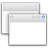
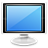

KDE-Systemeinstellungen
Archivierte Anleitung
Dieser Artikel wurde archiviert, da er - oder Teile daraus - nur noch unter einer älteren Ubuntu-Version nutzbar ist. Diese Anleitung wird vom Wiki-Team weder auf Richtigkeit überprüft noch anderweitig gepflegt. Zusätzlich wurde der Artikel für weitere Änderungen gesperrt.
Anmerkung: Neuere Kubuntu-Versionen werden im Artikel KDE Systemeinstellungen behandelt.
Zum Verständnis dieses Artikels sind folgende Seiten hilfreich:
 KDE besitzt zur Konfiguration des Systems standardmäßig ein einfaches Programm, das sich auf die wichtigsten Einstellungsdialoge fixiert und diese in der Übersicht als große Symbole und über den Menüpunkt "Einrichten" auch als klassische Baumansicht darstellt. Es lässt sich via
KDE besitzt zur Konfiguration des Systems standardmäßig ein einfaches Programm, das sich auf die wichtigsten Einstellungsdialoge fixiert und diese in der Übersicht als große Symbole und über den Menüpunkt "Einrichten" auch als klassische Baumansicht darstellt. Es lässt sich via
"Menü -> Rechner -> Systemeinstellungen"
oder über den Befehl:
systemsettings
starten [1].
Dort kann man von Systemeinstellungen wie den Netzwerkeigenschaften bis hin zu individuellen Einstellungen wie dem Aussehen der Fenster oder der Arbeitsflächeneffekte eine Menge einstellen. Diese Liste soll einen kurzen Überblick geben, wo welche Einstellungen zu finden sind.
Allgemein¶
| Erscheinungsbild & Verhalten | ||
 | "Arbeitsfläche" | Arbeitsflächeneffekte, Virtuelle Desktops, Bildschirmschoner und Programmstartanzeige einrichten. |
 | "Benachrichtigungen" | Klänge bei verschiedenen Aktionen abspielen. |
 | "Erscheinungsbild" | Das Aussehen der kompletten KDE Desktopumgebung an die eigenen Wünsche anpassen. |
|  | "Fenstereigenschaften" | Verschiedenste Optionen zum Umgang mit Fenstern. Unter anderem lassen sich das Aktivierungsverhalten, das Verhalten bei Fensterwechsel & Mausklicks, Animationen und vieles mehr einstellen. |
| Persönliches | ||
| "Land/Region & Sprache" | Installation von weiteren Sprachen, Konfiguration von Spracheinstellungen, sowie die Festlegung von Tastaturlayouts & Rechtschreibprüfung für verschiedene Sprachen. | |
 | "Persönliche Informationen" | Pfadangabe für die Dateiablage, Passwort, Avatar und Informationen zum Benutzer, die systemweit in Programmen Verwendung finden. |
| "Standard-Komponenten" | Definition von Standardprogrammen für Terminal, Editor, Datei- & Fenstermanager, Instant Messenger, Webbrowser und E-Mail-Client. | |
| "Zugangshilfen" | Einstellungen um die Bedienung des Systems auf Menschen mit Behinderungen zu optimieren. | |
| Netzwerk & Verbindungen | ||
| "Freigabe" | Netzwerkfreigaben erstellen bzw. Freigaben im System einbinden. Mehr dazu unter Samba bzw. NFS. | |
 | "Netzwerk-Einstellungen" | Proxy-Server angeben sowie zahlreiche weitere Optionen rund um Netzwerkeinstellungen. |
| Systemverwaltung | ||
|  | "Anzeige" | Bildschirmauflösung und mehrere Monitore für eine Arbeitsfläche einrichten. |
 | "Datum & Zeit" | Datum, Uhrzeit sowie die Zeitzone einstellen. Ebenso ist es hier möglich einen NTP-Zeitserver einzutragen, mit dem die Uhrzeit des Systems angeglichen werden soll. |
| "Druckereinrichtung" | Drucker und deren Netzwerkfreigaben verwalten. | |
| "Hinzufügen und Entfernen von Software" | KDE Softwareverwaltung zum De-/Installieren von Software, zur Durchführung von Updates und Einrichten von Softwarequellen. | |
| "Multimedia" | Verwaltung der Hardware zur Audio-Ausgabe/Aufnahme und deren Backends. | |
| "Schriftarteninstallation" | Verwaltung aller Schriftarten, die im System verwendet werden. Es können persönliche Schriftarten hinzugefügt werden. | |
 | "Tastatur & Maus" | Tastaturparameter wie Wiederholrate und Verzögerung, Tastenkürzel, sowie die Maus, Mauszeiger, Joysticks, Gamepads und Touchpads konfigurieren. |
| | "Tastenkombinationen" | Tastenkombinationen, Mausgesten, etc. für verschiedene Programme und Aktionen konfigurieren. |
Erweitert¶
| Erweiterte Benutzereinstellungen | ||
| | "Arbeitsflächen-Design-Details" | Benutzerdefiniertes Plasma Design konfigurieren. |
 | "Audio-CDs" | Laufwerke zum Auslesen von Audiodateien konfigurieren. Einstellungen zum Kodieren von Multimedia-Inhalten in das ogg- und mp3-Format, die systemweit in Programmen Verwendung finden. |
| "Autostart" | Verwaltung von Programmen und Skripten die automatisch während des KDE-Startvorgangs bzw. beim Abmelden oder Herunterfahren ausgeführt werden sollen. | |
| | "CDDB-Abfragen" | Einstellungen zum Abfragen von Informationen zu Musik-Titeln über CDDB  . . |
| "Dateizuordnungen" | Verwaltung welche Programme für welchen Dateityp zuständig sind. | |
| "Desktopsuche" | Einstellungen zur Desktop Suche mittels Nepomuk und Strigi. | |
| "Diensteverwaltung" | KDE eigene Dienste konfigurieren. | |
| "Digitale Brieftasche" | Einstellungen des digitalen Brieftaschensystems (KWallet) für die KDE-Software Compilation. | |
| "Digitalkamera" | Einstellungen, um auf eine angeschlossene Digitalkamera zugreifen zu können. | |
| "Energieverwaltung" | Einstellungen zur Energieverwaltung. | |
| "Geräte-Aktionen" | Einrichten von Aktionen, die ausgeführt werden sollen, wenn neue Geräte an den Rechner angeschlossen werden. | |
| | "Hardware" | Backends für die Hardwareschnittstelle Solid konfigurieren. |
| "KDE-Ressourcen" | Ressourcen für Kontakte, Notizen oder Kalender definieren, so dass sie systemweit in Programmen Verwendung finden. | |
| "Open-Collaboration-Dienste" | Verwaltung der Anbieter von Open-Collaboration-Diensten wie z.B openDesktop.org  . . | |
| | "Sitzungsverwaltung" | Optionen und Einstellungen zur eigenen KDE Sitzung. |
| "Wechselmedien" | Automatischen Umgang mit Wechselmedien einrichten. | |
| System | ||
 | "Anmeldungsmanager" | Den KDM Displaymanager einrichten. |
 | "Benutzerverwaltung" | Erstellen und Einrichten von Benutzerkonten und Gruppen. |
 | "K3b-Einrichtungsassistent" | Einrichten der Zugriffsrechte zum Brennen von CD, DVD und Blue-Ray mit K3b. |
Problemlösungen¶
Einige der in den Systemeinstellungen verfügbaren Optionen benötigen Rootrechte, allerdings sind in einigen KDE-Versionen noch nicht alle Module in PolicyKit integriert. Um dennoch die gewünschten Einstellungen vornehmen zu können, kann man die einzelnen Module mit kcmshell4 wie folgt starten.
Achtung!
Graphische Programme nie aus einer root-shell oder mit einem einfachen sudo starten, sondern nur mit kdesudo bzw. gksudo. Näheres siehe root-bei-grafischen-Programmen
kcmshell4 --list # auflisten der verfügbaren Module kdesudo kcmshell4 $MODUL # $MODUL durch das benötigte Modul, z.B. kdm ersetzen
- Erstellt mit Inyoka
-
 2004 – 2017 ubuntuusers.de • Einige Rechte vorbehalten
2004 – 2017 ubuntuusers.de • Einige Rechte vorbehalten
Lizenz • Kontakt • Datenschutz • Impressum • Serverstatus -
Serverhousing gespendet von